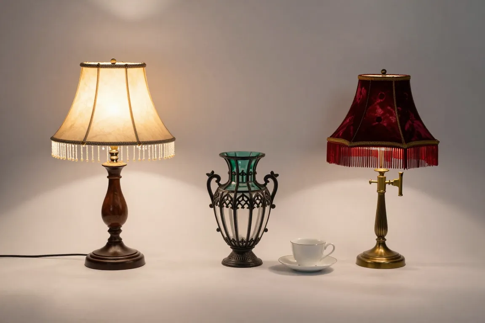

Maskinalderens husholdningsvarer i Storbritannia: støpejern, presset glass, dypknappet fløyel og mørkt polert tre, med ornament lagt på hver flate av maskinen.

Kjerneidé
Maskinen gjør ornament billig, så hver gjenstand kan bære rikt mønster, dyp farge og tung form som tegn på komfort og rang.
Designprinsipper
Dekk hver stor flate med ornament: et dreid, skåret, støpt, presset eller trykt mønster.
Bruk mørk, dyp polering på mahogni, valnøtt og eik; glansen er 60 til 85 GU.
Bruk støpejern til ovner, badekar, stativer og gjerder, og støp mønsteret i formen.
Lag et sete dypt og mykt, med knappet fløyel og en frynse på 5 til 10 cm.
Bruk presset glass med et repeterende mønster og farget glass til lamper og vaser.
Bruk 3 eller 4 mettede farger i ett rom: karmosinrød, flaskegrønn, mørkeblå og gull.
Lag hver gjenstand med en tung fot og en rik topp, slik at den ser solid og kostbar ut.